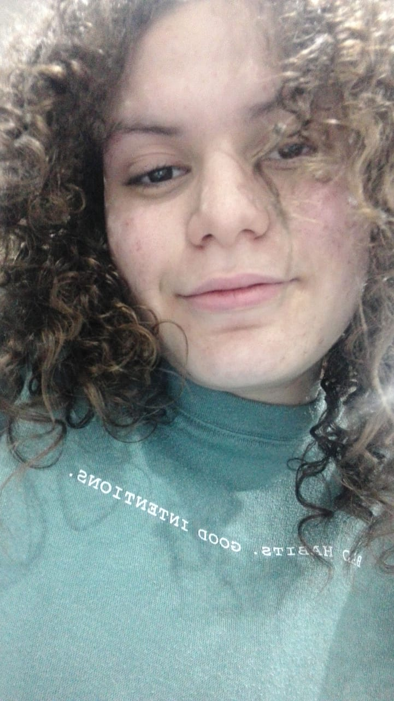
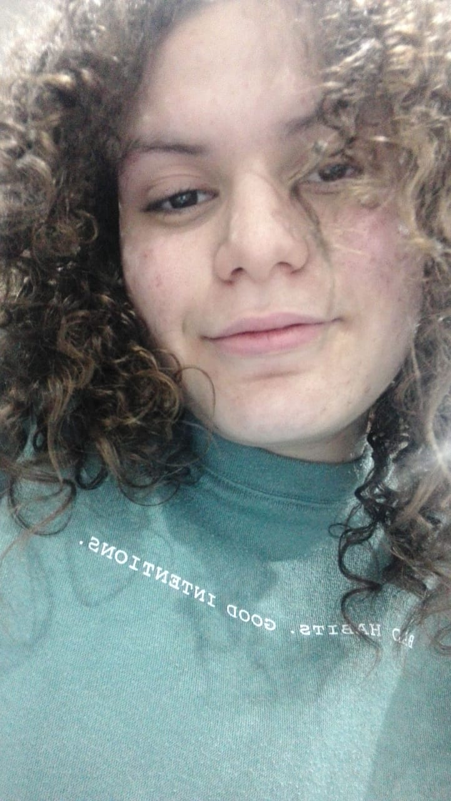

"PICTURES ARE MEMORIES"
that's what we said when we took pictures and sent them to each other at the beginning.
Now, let's see some of the unforgettable pictures we took so far.
It was the last day at course. What a day ha! it feel like yesterday. I sat in the class listening to you and others talking and I was speechless seeing your beauty and energy. Yeah, it was the day I asked you about your name and acted like I knew nothing, was it a stupid move? yeah, but admit it... it was fun. I believe I made up my mind that day to talk to you once I find the courage to do so. And let's not forget the cool hairstyle xD.
The best way to start this is by remembering the first picture you shared with me. With your perfect pineapple and adorable smile, guess you knew how to make fall for you effortlessly.
this picture is the first selfie I took for you. It was taken on 22th of september,2019. I was on my way to college and before that you asked me to show you the new t-shirts I bought when i wear then. It has been over a year since when I took it but the memory is surely as fresh as it can be.
This is the first picture I saved. As I remember, you took in an AUC party (you fancy giiiiirl!). It is funny how happy I was that night after finally having a picture of yours in my gallery, it was like looking at you whether my eyes were open or closed.
Remember this bad boy? This was the first picture you edited. DAMN GIRL! you have any idea how much I look at these pictures? I loved what you did with them and certainly kept them in a place where I can always check them.

Throwing it back to the 11th of January,2020. I finished my exam and went to see meet you... The first time we met. We shared snickers, sat on a ladder, talked, took selfies, hugged 5 times (the last hug was so strong that you told me people are watching... I lost concentration between your arms), and I was really happy because these things!
Look what we have here?
OH! it is superman and his lady is taking a pictures of him. Nah for rea, this was my first super hero pictures and we called it "اليوناني" which was cool to be honest. This bad boy was taken on our first meeting too but it had to be separated to show you how AWESOME you are at taking pictures (gonna show ya more awesome pictures!!)
Want to know how lucky we are???
Look at these pictures date... it is exactly one month after our first meeting. YEAH THAT SOUNDS RIDICULOUS!
I remember that you finished your dentist and the left half of your face was numb and when your eyes teared you asked me to wipe your tears and it was sooooo sweet.
The first five pictures were taken by you at Mac and yeah your glasses look good on me but what's better is the way you took the pictures, there was always someone who mentioned them when he saw me.
The other pictures were taken later when we went for a walk and we look hilariously good.
And let's not forget the fancy sticker I made.
Now let's jump in time to exactly 8 days before my birthday. It was hot and you hardly handled it but we had fun. Not having my hair was really weird but I look hilarious in the pictures which is good. I think that day we found a spot where we can always sit, eat, talk, and take pictures.
ONE DAY BEFORE MY BIRTHDAY!!
We met, shared a dilicious lotus and you really expressed how you felt about the way i ate them (because the sanitizer wasn't enough for my BIG HANDS) then we went for a walk and sat and took these pictures. I remember what you did when you saw me that day, you grapped a green notebook with your name on it (and I told you about your dad's name being on the back) and you handed it over to me. It felt and still feels sweet whenever I look at it and remember that day.

THE BEST PICTURES?
YESSSSS! this was a hell of a day. We ate that gigantic thing and walked out of BAZOOKA like 2 drunk pregnant ladies. After that we went to FOG, where we bought my new favorite clothes!. The happiness that came from food and the clothes are not anywhere near the happiness I felt from seeing you, the lady that flies to the moon but she was more beautiful.
HO HO HO SANTA IS HERE
remember these? YESSSSS, these are the gifts we exchanged or the things we made/brought to each other. Starting with the necklace followed by the bracelet to the drawing then the perfect finale, the notebook. All these things sparkle more joy in my mind as well as my life.
 

Now this is a dose of the ADORABLE US!
These pictures shows how beautiful we are. Everyone of these pictures has a memory hidden in it, like being convinced you are an angel, using one of them as my wallpaper, a super fancy pictures, a pose that I adore (I tried adding wings to that picture before), a picture you really like, a picture I looked at everytime I finished the video related to it, the day mom knew about you, the british beautiful princess, eating and hanging out at Al Assil, and finally the super hot lady. These pictures are like art whether by our appearances or by the occassions they were taken in, but what these pictures have in common is that no one can deny that they're the epitome of perfection.